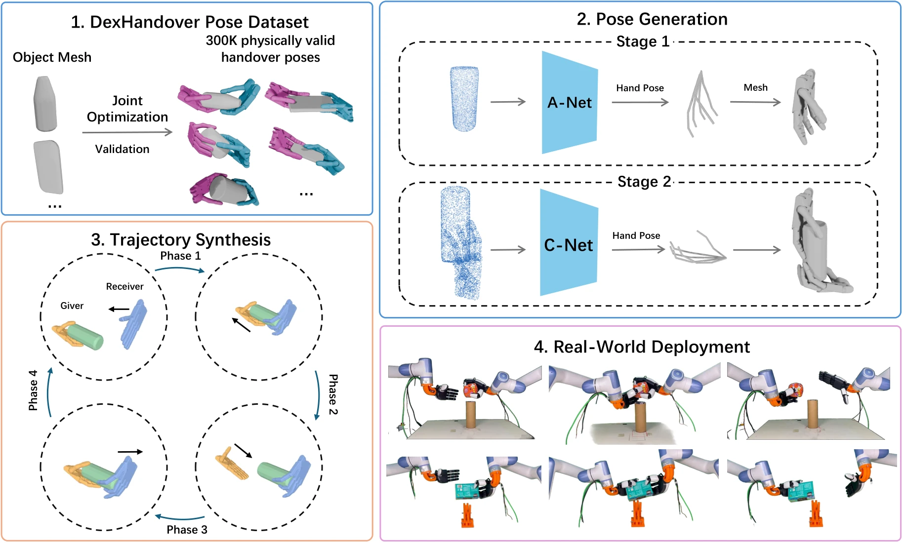
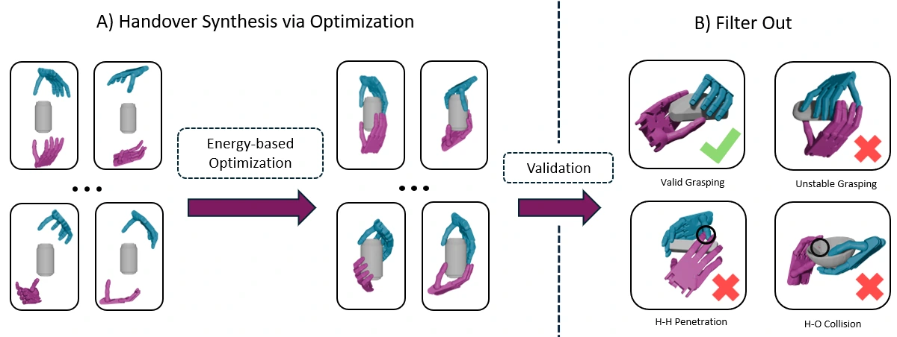
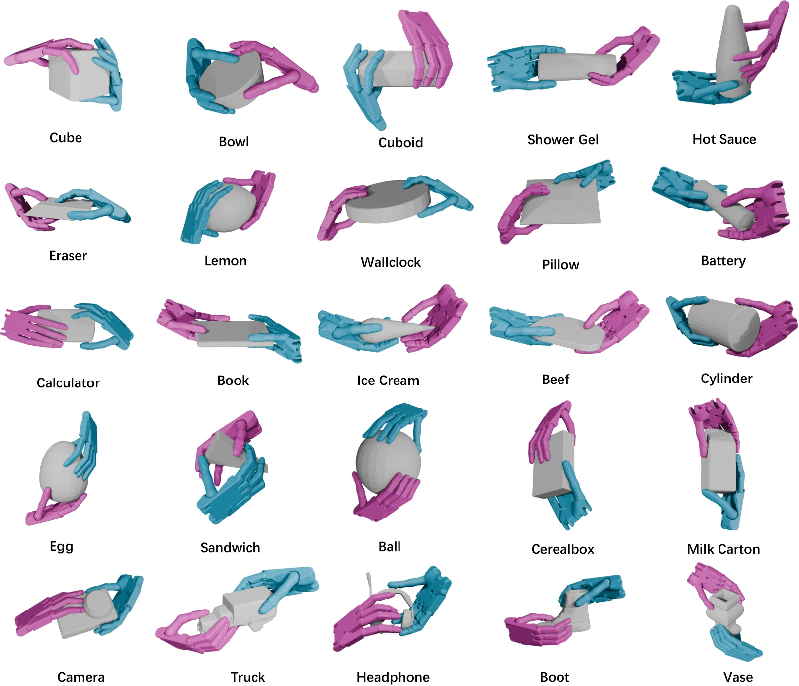
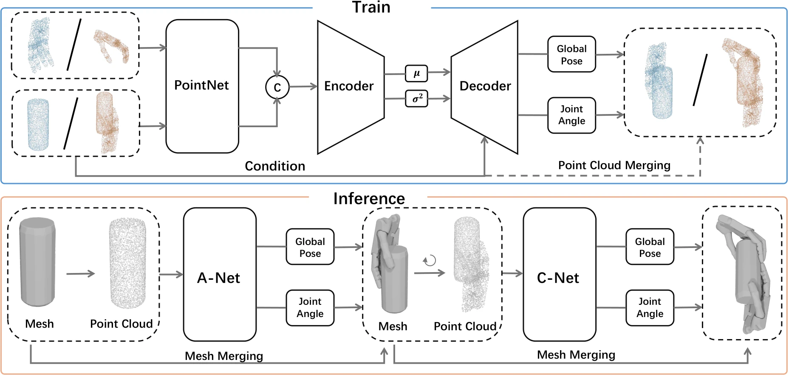
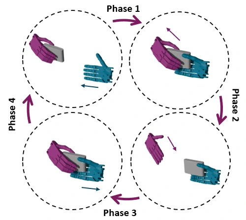
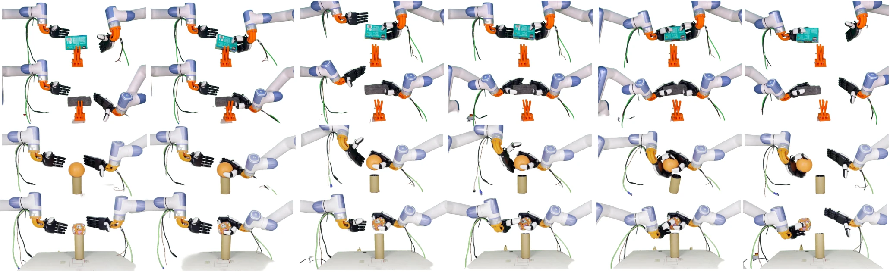

Conference on Robot Learning · 2026
DexHandoverLearning Bimanual Dexterous Handovers
from Large-Scale Synthetic Data
† Corresponding author

THE IDEA
A grasp that makes room for the next hand.
A secure single-hand grasp can block the surfaces needed by a receiving hand. Dexterous handover requires the giver to hold the object while leaving enough room for the receiver, and both hands to coordinate their finger contacts throughout the exchange.
DexHandover maps object geometry to bimanual handover motions. We first synthesize physically validated pose pairs through joint optimization, then learn a two-stage conditional model to generate compatible giver and receiver poses. A reinforcement learning policy turns these poses into continuous motions, which we evaluate in simulation and replay on physical dexterous hands.
- 300K+
- Physically validated pose pairs
- 701
- Unique object models
- 37
- Everyday object categories
SHAPE TO MOTION
Three stages, one coordinated handover.
- 01
Synthesize data
Optimize both hands together and validate each hand's grasp in physics simulation.
- 02
Generate pose pairs
Predict the giver, then condition the receiver on the object and the generated giver.
- 03
Learn the motion
Track a pose-anchored reference with reinforcement learning to coordinate the exchange.
01 A dataset built for handover
We jointly optimize two ShadowHands around each object, balancing per-hand grasp quality with object and hand-hand penetration constraints. Each accepted pose pair must pass geometric filtering and independent grasp-stability tests for both hands under all six principal gravity directions.


02 Generate the giver, then the receiver
A-Net predicts a giving-hand pose from the object point cloud. C-Net receives the combined object and generated giving-hand geometry, and predicts a receiving-hand pose in the remaining space. Both networks use the same conditional variational autoencoder architecture; their conditioning geometry differs.
The approach directions are controlled by rotating the input geometry. In the reported held-out-object evaluation, these directions are sampled from validated pose pairs for the test mesh.

03 Coordinate contacts through the exchange
Generated poses anchor an interpolated reference trajectory. A residual reinforcement learning policy adjusts the hand motion during contact, supporting the object as control passes between the hands.
In simulation, the hands alternate giver and receiver roles in a repeating four-phase loop. Hardware experiments replay one exchange extracted from the policy rollout.

SIMULATION
From compatible poses to successful exchanges.
We evaluate the full pipeline on a held-out mesh from each of six categories, excluded from both pose-generator and policy training. Success requires a complete cycle of two consecutive exchanges. The RL policy improves success over PD tracking of the same reference trajectory in every evaluated category.
| Object category | Naive tracking | Ours (RL) |
|---|---|---|
| Tissue box | 38.3 | 92.3 |
| Cereal box | 23.2 | 84.4 |
| Soda can | 37.6 | 97.6 |
| Food item | 21.9 | 85.3 |
| Video game controller | 8.8 | 72.2 |
| Mouse | 22.6 | 75.1 |
PHYSICAL ROBOTS
Replaying the handover on two XHands.
We retarget the simulated finger trajectories by matching fingertip positions and compute arm motion from the simulated wrist trajectory using inverse kinematics. The grasp, lift, and exchange are replayed in open loop.

19/25
Successful hardware trials
Five trials per object, with placement varied by up to 2 cm and approach directions held fixed. Success requires the hands to separate with the object held by the receiver.
| Object | Type | Success |
|---|---|---|
| Tissue box | Deformable | 5/5 |
| Medicine ball | Deformable | 3/5 |
| Sponge cuboid | Deformable | 4/5 |
| Soda can | Rigid | 5/5 |
| Printed cuboid | Rigid | 2/5 |
Current limitations. Pose generation uses complete object geometry, and open-loop hardware replay is sensitive to changes in contact and object placement. Feedback on the object's in-hand pose is an important direction for future work.
REFERENCE
Citation
@inproceedings{zhang2026dexhandover,
title = {DexHandover: Learning Bimanual Dexterous Handovers from Large-Scale Synthetic Data},
author = {Zhang, Yulong and Qing, Jingfan and Li, Zhibin and Liu, Jianran and Liu, Libin},
booktitle = {Conference on Robot Learning},
year = {2026}
}